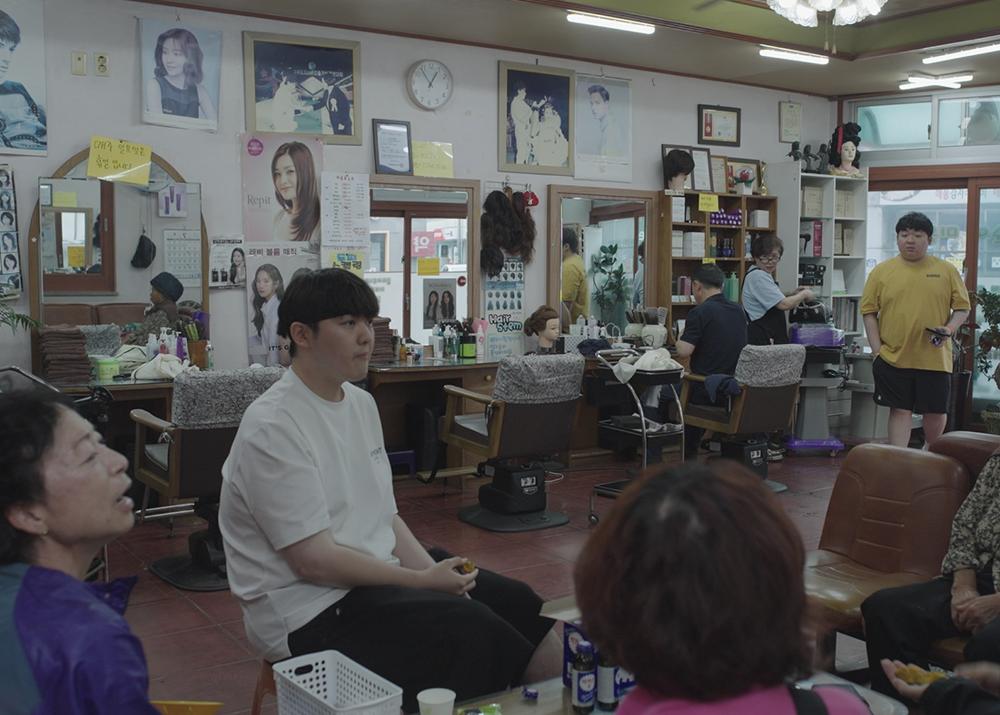
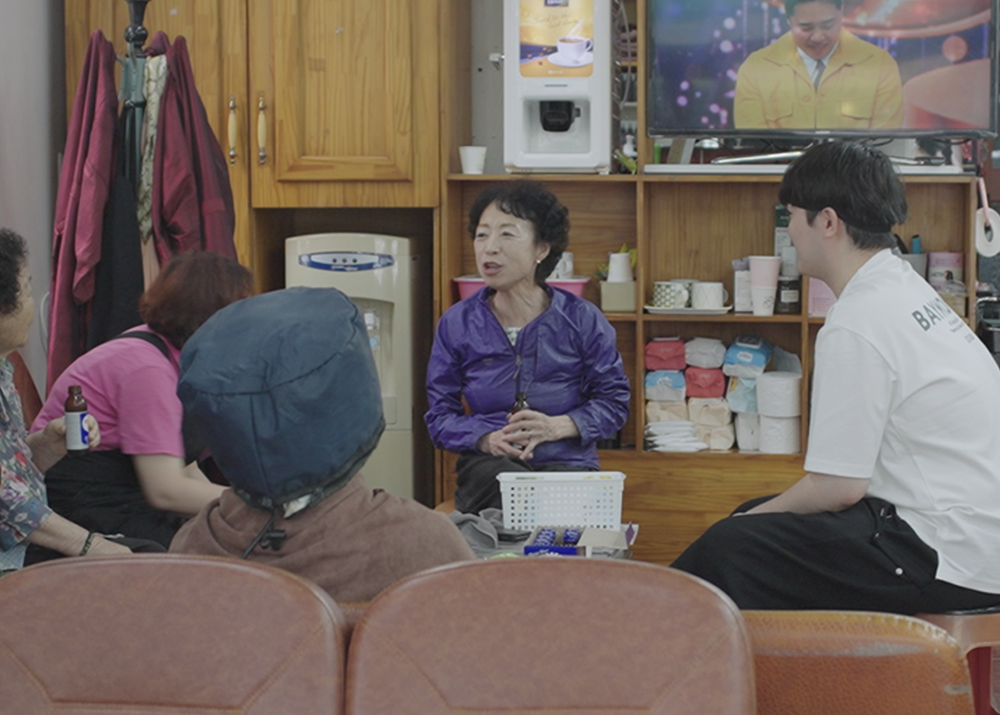

Storytelling portfolio
Jonghoon Ahn
Filmmaker working in documentary and short film. I use long takes and spare dialogue to explore how memory and social pressures shape everyday life.
- Academy Nicholl FellowshipsOfficial Entrant · 2025
- CJ & TIFF K-Story FundShortlist · 2025
- Sundance Ignite × Adobe FellowshipFinalist · 2024
Documentary · Work in progress
INSUN
Go Insun runs a hair salon near Sanbangsan on Jeju Island. The film begins with the rhythms of her work and conversations in the salon, then follows her recollections to places she knows. Observational footage and historical research bring those memories into contact with the present-day landscape.


Narrative short · Completed film
Urban Diary
When her father returns to work, high school student Min-hae finds herself alone in the family apartment. The film follows the small shifts in her daily routine as a familiar space begins to feel different.
Viewing password urbandiary · Open on Vimeo
Selected production credits
- K-Art Young Creator Support · 2026
- Selected creator, Seoul Foundation for Arts and Culture
- Art Korea Lab Media Wall · 2026
- Exhibiting artist and organizer, Algorithm of Flowers and Grammar of Waves